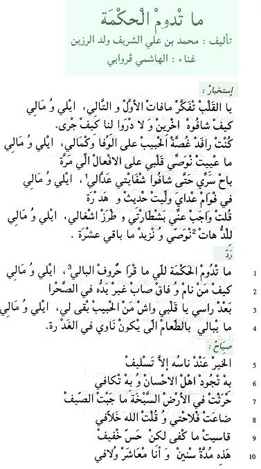

1
| Sagesse ne perdure... Auteur : Mohammed Ben ‘Ali Ould Errzine Interprète : El-Hâchemi Guerouâbi |
- Istikhbâr
- Ô mon coeur, rappelle-toi tout le passé;
- D’autres l'ont connu, mais sans comprendre ce qui nous est arrivé.
- Je partageais loyalement l'angoisse de mon ami
- et m'efforçais sans faille de lutter contre le mal.
- Mon secret, divulgué, a fait la joie de mes censeurs, devenant pour eux sujet de commérages.
- Sagacité et expérience m'obligent à dire avec insistance
- aux poètes inspirés : " En l'amitié il ne faut plus croire ! "
- refrain :
- Seule perdure la sagesse de qui étudie la morale des Anciens, sans laquelle l'homme sorti de son sommeil se réveille démuni, en plein désert.
- Hormis ma solitude, ô mon coeur,quel ami me reste-t-il ?
- Le traître qui ourdit se soucie peu de (partager) un repas.
- çiyâh :
- Les bienfaits rejaillissent toujours sur les généreux qui les prodiguent.
- J'ai labouré une terre stérile sans rien récolter ;
- vain fut mon labeur, mais je me dis : << Dieu compensera cette perte. >>
- J'ai tout enduré en silence.
- Que d'années passées en compagnie de mon ami
- Ô mon coeur, rappelle-toi tout le passé;
